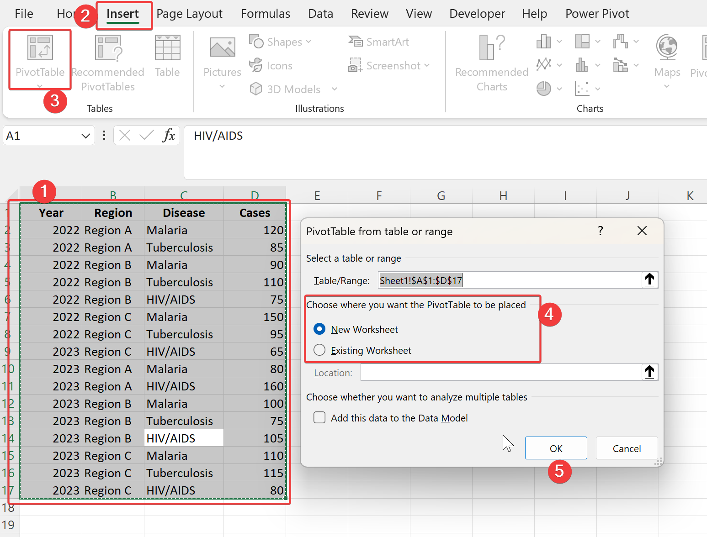

4 Data Cleaning and Analysis
Data analysis is the process of inspecting, cleaning, transforming, and modeling data to discover useful information, inform conclusions, and support decision-making. Excel is also a tool for data analysis that enables you to manipulate, analyze, and visualize data quickly and easily. Excel can do most of the data analysis jobs you encounter in your day to day activities. For advanced analysis other software can be used.
4.1 Cleaning Data
Data cleaning involves fixing or removing incorrect, corrupted, incorrectly formatted, duplicate, or incomplete data within a dataset. When combining various data sources, there are numerous chances for data duplication or misidentification. Inaccurate data can lead to unreliable results and outcomes. Since data cleaning processes differ from one dataset to another, there isn’t a singular approach to outlining precise steps. Nonetheless, it’s crucial to establish a template for your data cleaning process to ensure consistent and correct analysis everytime. In this section, we will see some data cleaning techniques which you must be familiar with.
Before cleaning your dataset, consider making a copy of your original dataset. This way, you can always revert to the original data if needed.
4.1.1 Remove Duplicate Rows
Duplicate rows can clutter your data and make analysis challenging. Excel provides powerful tools to identify and remove these duplicate entries efficiently.
Select Your Data: Begin by selecting the range of cells or the entire table from which you want to remove duplicates.
Navigate to the Data Tab: Click on the “Data” tab in the Excel ribbon at the top of the screen.
Click on Remove Duplicates: In the Data Tools group, locate and click on “Remove Duplicates.”
Choose Columns: A dialog box will appear listing all the columns in your selected range. You can choose the columns where you want Excel to check for duplicates. By default, all columns are selected.
Determine Criteria: Decide whether you want Excel to consider all columns collectively or only specific columns when identifying duplicates. Check or uncheck the boxes accordingly. For example, if your data have some unique identifier (like ID Card No) then you can select that column only.
Remove Duplicates: After setting your criteria, click “OK.” Excel will process the data and remove any duplicate rows based on your specified criteria.
- Review Results: Excel will display a message indicating how many duplicate values were found and removed. Click “OK” to close the message box.
To visually identify duplicates before removing them, apply conditional formatting to highlight duplicate values within your dataset.
4.1.2 Splitting Text
One of the powerful features of Excel is its ability to manipulate and organize data efficiently. The “Split to Columns” function is useful when you need to separate text within cells into multiple columns based on a delimiter or a specific character. This feature can save you time and effort, especially when dealing with large datasets.
Select Your Data Range:
First, make sure the column that contains the data to be split up has enough empty columns to the right to accommodate the extracted data. Select the cells that contain the text you want to split into columns. Ensure that each cell contains the text you wish to separate.Navigate to the Data Tab:
Go to the Excel ribbon and click on the “Data” tab.Choose “Text to Columns”:
Within the “Data Tools” group, locate and click on “Text to Columns.” This action will launch the “Convert Text to Columns Wizard.”
Select the Delimiter:
In the first step of the wizard, you’ll be prompted to choose how you want to split your data. Excel gives you the option to split by delimiter (such as commas, spaces, tabs, or custom characters used to separates text items) or by fixed width. Choose the appropriate option based on your data format and click “Next.”Specify Delimiter Settings (if applicable):
If you selected to split by delimiter, specify which delimiter Excel should use for splitting your text. You can choose from predefined delimiters like Tab, Semicolon, Comma, Space, or specify a custom delimiter. Preview the results in the Data preview window to ensure the split is as expected.Configure Column Data Format (if needed):
In the next step, you can format each column of data. Choose the data format (General, Text, Date, etc.) for each column or keep it as is. Click “Finish” once you are satisfied with your selections.Review Your Split Data:
Excel will automatically split the selected text into separate columns based on your specifications. Review the resulting columns to ensure the split was successful and meets your requirements.
Always use the Data preview window to see how your text will be split before finalizing the operation.
4.1.3 Removing Extra Space
Sometimes, the data contains extra spaces. It is very difficult to spot a space character at the end of a text string. It can cause problems when you are doing analysis. For example, ‘Male’ is not same as ‘Male’. When you do analysis, there will be two variable values ‘Male’ and ‘Male’, but basically both are the same.
To solve this, use the TRIM() function, which removes leading and trailing spaces while condensing multiple interior spaces into a single space.
=TRIM(text)text: This is the text string from which you want to remove extra spaces.
4.1.4 Changing the case of Text
Mostly, you need to make text in columns consistent in terms of case. Unlike Microsoft Word, Excel doesn’t provide a direct way to do it. But we can change the case using functions. The relevant functions are as follows:
- The
UPPER()function converts all letters in a text string to uppercase.
=UPPER(text)- The
LOWER()function converts all letters in a text string to lowercase.
=LOWER(text)- The
PROPER()function capitalizes the first letter of each word in a text string and converts all other letters to lowercase.
=PROPER(text)4.1.5 Converting Values
The CONVERT() function allows you to convert a measurement from one unit to another within the same measurement category.
The CONVERT() function in Excel follows a specific syntax:
=CONVERT(number, from_unit, to_unit)- number: This is the value you want to convert.
- from_unit: The current unit of the value you want to convert.
- to_unit: The unit to which you want to convert the value.
Imagine you have a dataset containing temperature recorded in Fahrenheit (F) in cell A1, and you need to convert these weights to Celsius (C) for analysis or reporting purposes. Let’s use the CONVERT() function to do this conversion.
=CONVERT(A1,"F","C")In this example:
- A1: contain the temperature reading in Fahrenheit
- “F”: represent the temperature in Fahrenheit
- “C”: indicates the desired unit for conversion(Celsius)
4.1.6 Classifying Values
Often, you may have values that need to be classified into a group. In Excel, you can classify values into groups using the IFS() function along with logical tests. The IFS() function allows you for multiple conditions to be evaluated, and based on whether the condition is true or false, return different values. This can be used effectively to create categories or groups for your data.
Suppose you have data on the ages of participants of a survey in column A, and you want to classify these values into three groups:
- Child: Values less than 18
- Adult: Values between 18 and 60 (inclusive)
- Elder: Values greater than 60
In an adjacent column (e.g., column B), enter the following formula in the first cell (e.g., B2) to classify the value in A2:
=IFS(A2<18,"Child", A2<=60,"Adult", A2>60,"Elder")You can extend the formula down the column by dragging the cell handle. This will automatically apply the formula to all the cells in the column.
4.1.7 Joining Columns
Combining text from different columns into a single cell can be efficiently achieved using the CONCAT() or TEXTJOIN() functions.
Using CONCAT() Function
The CONCAT() function in Excel is used to concatenate, or join, text from different cells or ranges into one cell. It is particularly useful when you want to combine text strings without using any delimiter (a character that separates text items). You can include additional separators or formatting within the CONCAT() function to control how the text is combined (e.g., adding spaces, commas, etc.).
=CONCAT(text1, [text2], ...)- text1: This is the first text or cell reference that you want to concatenate.
- [text2]: Additional text or cell references that you want to join.
See the example in figure below:
Using TEXTJOIN() Function
The TEXTJOIN() function allows you to concatenate text from a range of cells with specified delimiters (such as commas, spaces, or custom characters) between each item. This function is highly flexible and can handle situations where you need to skip empty cells or include only non-empty values.
=TEXTJOIN(delimiter, ignore_empty, text1, [text2], ...)- delimiter: The delimiter to be used between each text item.
- ignore_empty: A logical value (TRUE or FALSE) that specifies whether to ignore empty cells.
- text1, text2, …: The text values or cell ranges that you want to concatenate.
See the example in figure below:
4.2 Data Validation
Data validation is a powerful feature that allows you to control what type of data can be entered into a cell. For example, you may want to limt the data entry in a particular range to whole numbers between 1 and 100. If you make an invalid entry, you can display a custom message. By setting validation criteria, you can ensure data integrity, accuracy, and consistency throughout your spreadsheets. Let’s see how to use data validation effectively.
4.2.1 Specifying Validation Criteria
- Selecting Cells for Validation:
- Begin by selecting the cells where you want to apply data validation. You can select a single cell, a range of cells, or even an entire column.
- Accessing Data Validation:
- Navigate to the Data tab on the ribbon.
- Click on Data Validation in the Data Tools group.
- Setting Validation Rules:
- In the Data Validation dialog box, choose the type of validation you want under the Settings tab.
- For example, to allow only whole numbers between 1 and 100, select Whole number and specify the minimum and maximum values.
4.2.2 Types of Validation Criteria
Excel offers several validation criteria options, including:
- Whole Number: Restricts input to whole numbers within a specified range.
- Decimal: Allows decimal numbers within a specified range.
- List: Limits input to items in a predefined list.
- Date: Validates input as dates within a specified period.
- Time: Validates input as times.
- Text Length: Controls the length of text allowed in a cell.
- Custom: Uses a custom formula to determine if input is valid.
4.2.3 Creating a Dropdown List
Dropdown lists are particularly useful for ensuring data consistency and ease of use. Here’s how to set up a dropdown list using data validation:
Specify List Items:
- Enter the items you want in the dropdown list in a separate column or range.
Select Cells for Dropdown:
- Choose the cells where you want the dropdown list to appear.
Set Data Validation:
- Access the Data Validation dialog box.
- Choose List under Allow.
- Specify the source of the list using the range selector or by typing the range directly (e.g.,
=$E$3:$E$6). - You can also write the list items in Source box, each items seperated by comma.
Enable the Dropdown:
- Now, the selected cells will display a dropdown arrow, allowing users to choose from the predefined list.
4.3 Creating a Dependent List
this part is yet to be written
4.4 Pivot Tables
The PivotTable feature is perhaps the most technologically sophisticated component in Excel. A pivot table can provide quick answers to questions about your table that can otherwise only be answered by complicated formulas.
4.4.1 Creating Pivot Table
Prepare Your Data Ensure your dataset is organized with column headers and rows of data. Each column should have a clear heading, and there should be no blank rows or columns within the dataset.
Select Your Data Click anywhere inside your dataset. Alternatively, you can manually select the range of cells that contain your data.
Insert PivotTable Navigate to the “Insert” tab on the ribbon at the top of Excel. Click on “PivotTable” in the “Tables” group. This will open the Create PivotTable dialog box.
Select Your Data Range Ensure the correct range of data is selected in the “Table/Range” field of the Create PivotTable dialog box. Excel should automatically detect the range based on your selection in Step 2.
Choose Where to Place the PivotTable Select where you want your PivotTable to be placed. You can either choose to place it in a new worksheet or in an existing worksheet.
Click “OK” Once you’ve selected your data range and the destination for your PivotTable, click “OK”. This will create a new PivotTable or insert one into the designated location.

Design Your PivotTable
- Fields List: A new pane will appear on the right, called “PivotTable Fields”. This pane lists all the column headers from your dataset.
- Drag Fields to Areas: Drag the fields you want to analyze into the different areas of the PivotTable:
- Values: Drag the fields you want to perform calculations on (e.g., sums, averages) into this area.
- Rows: Drag fields here to use them as row labels in your PivotTable.
- Columns: Drag fields here to use them as column labels in your PivotTable.
- Filters: Drag fields here to use them as filters for your PivotTable.
Customize Your PivotTable
- Apply Filters: Use the dropdown arrows next to field names in the PivotTable to filter data.
- Change Summarization: Right-Click on any value in the PivotTable, choose “Value Field Settings” to change the calculation type (e.g., sum, count, average).
- Format Your PivotTable: Modify the PivotTable’s design, style, and layout using options in the “PivotTable Analyze” tab that appears when the PivotTable is selected.
Refresh Your PivotTable (if needed) If your data changes, you can refresh your PivotTable to reflect the updated information. Simply right-click on the PivotTable and choose “Refresh”.
4.4.2 Commands in the PivotTable Analyze Tab
Data
- Refresh: This command updates the pivot table with the latest data from the source range. It’s useful when your underlying dataset has changed, and you want your pivot table to reflect those changes.
- Change Data Source: Use this command to modify the source data range for your pivot table. If you’ve added more data to your dataset or want to change the range for any reason, this option is essential.
Actions
- Select: Allows you to select specific elements within your pivot table, such as cells, columns, or rows, for further manipulation.
- Move PivotTable: You can relocate your pivot table within the same workbook or to a different worksheet using this option.
- Clear: Removes applied filters or customizations, or formatting from the pivot table.
Fields, Items & Sets
- PivotTable Fields: Opens or closes the PivotTable Fields pane, which lets you add, remove, or rearrange fields within your pivot table.
- Show/Hide: Customize the display of various elements in your pivot table, such as subtotals, grand totals, and field headers.
Filter
- Insert Slicer: When you have multiple fields in your PivotTable, inserting a slicer allows you to create visual buttons that can filter data based on the selected criteria.
- Insert Timeline: It allows you to filter data by specific dates using an interactive timeline control.
Calculations
- Fields, Items & Sets: Create calculated fields, calculated items, or calculated sets to extend the functionality of your pivot table with custom calculations.
The Pivot Table in itself can be written in one whole chapter. But here we are only giving you only the basics of the pivot table. You can learn more about pivot tables from other sources. Consider this section as an introduction to pivot tables and try mastering it since pivot table is one of the most amazing feature in Excel.
Happy Pivoting!!!